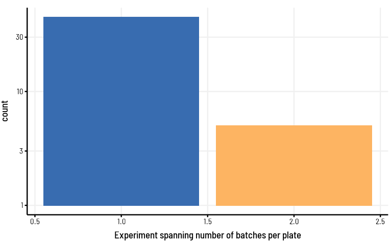
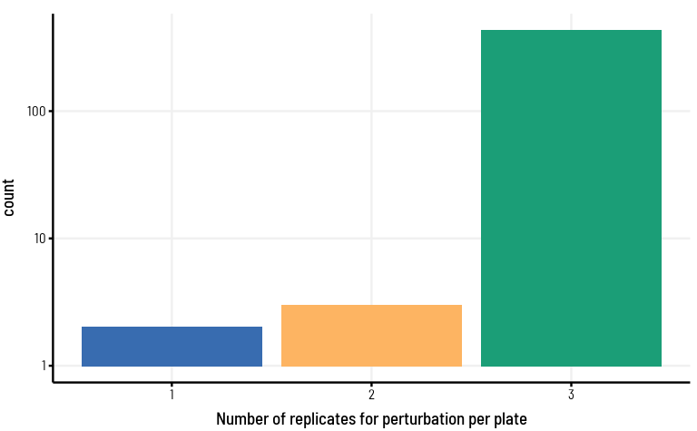

In order to understand how the experiements are performed, and how to handle the data for biological interpretation, we will need to look at metadata separately from the counts data. This will help us identify which samples can be analysed together and how the experimental strategy is.
We will read in both counts and metadata files to evaluate them separately.
plotPlate <-function(data, columnName) { data <- data %>%separate(well, into =c("X", "Y"),sep ="(?<=[A-Za-z])(?=[0-9])" ) %>%mutate(Y =as.integer(Y)) %>%arrange(desc(X),Y) %>%mutate(X =factor(X, levels = LETTERS[8:1]),Y =factor(Y, levels =seq(1,12,1))) g <-ggplot(data, aes(factor(X),Y, fill = data[,columnName])) +geom_tile() +coord_flip() +theme_clean(panel.grid.major =FALSE, axis =TRUE) +labs(fill = columnName, x ="", y ="")return(g)}
Understanding the metadata of all experiments
Sample_ID counts across plate from atlas
When I looked at the counts of unique sample_id analysed in each well, there seem to be discrepancies in well usage across the plate ranging from 136-141
Code
data = metadata %>%select(well) %>%table() %>%as.data.frame()plotPlate(data, "Freq") +theme(axis.line =element_blank())
Replicates per plate
Above plots prompted me to look at the distribution of relpicates per plate.
Code
data = metadata %>%select(siRNA_plate_id, repl) %>%unique() %>%group_by(siRNA_plate_id) %>%summarise(Freq =n(), .groups ="drop")data %>%ggplot(aes(Freq)) +geom_bar(fill = custom_pal[1:3]) +theme_clean() +xlab("No. of relpicates")
It is not a surprise, I guess, that we have most plates with only 2 replicates (n = 50), as the 3rd replicate (n = 25) is made from pool of consecutive plates. There are some plates which has been processed with 3 replicates (n = 5) as well.
Following plates have missing data points. exp1_Plate_1 has columns 1 - 4 completely removed from replicate 2 and 3. Closer inspection for the same plate shows that the replicate 3 has been imputed twice and hence the plot show replicate frequency as 4 rather than max value of 3.
Plates with gaps in well usage dictates that the relevant perturbations will be affected in terms of their replicate structure. This affects in creating statistical models where every sample set is expected to follow equal number of sample size (replicates) and normal distribution of data points.
Having low number of replicates in our experiment, this assumption will be further tested and affects prediction efficacy.
Experiment dates
Looking at the date column with multiple entries, it will be good to look at date of experiments across replicates per plate in each replicate group
It is also important to look at each perturbations experiments if they span on different dates.
As expected every single plate has single date entry.
Code
data = metadata %>%filter(siRNA_plate_id %in% repl_data$`1`$siRNA_plate_id) %>%select(siRNA_plate_id, date) %>%unique() %>%group_by(siRNA_plate_id) %>%summarise(Freq =n(), .groups ="drop")data %>%ggplot(aes(Freq)) +geom_bar(fill = custom_pal[seq_len(length(unique(data$Freq)))]) +scale_y_log10() +theme_clean() +xlab("Number of dates entry per plate")
All of the perturbations in this replicate group has only been evaluated once.
Code
data = metadata %>%filter(siRNA_plate_id %in% repl_data$`1`$siRNA_plate_id) %>%select(perturbation_id, date) %>%filter(!(perturbation_id %in%"NTC")) %>%unique() %>%group_by(perturbation_id) %>%summarise(Freq =n(), .groups ="drop")data %>%ggplot(aes(Freq)) +geom_bar(fill = custom_pal[seq_len(length(unique(data$Freq)))]) +scale_y_log10() +theme_clean() +xlab("Number of dates entry per perturbation id")
it’s good to see that every single plate across both replicates has single date entry.
Code
data = metadata %>%filter(siRNA_plate_id %in% repl_data$`2`$siRNA_plate_id) %>%select(siRNA_plate_id, date) %>%unique() %>%group_by(siRNA_plate_id) %>%summarise(Freq =n(), .groups ="drop")data %>%ggplot(aes(Freq)) +geom_bar(fill = custom_pal[seq_len(length(unique(data$Freq)))]) +scale_y_log10() +theme_clean() +xlab("Number of dates entry per plate")
Also most of the perturbations in this replicate group has only been evaluated once per date except 15 perturbations.
Code
data = metadata %>%filter(siRNA_plate_id %in% repl_data$`2`$siRNA_plate_id) %>%select(perturbation_id, date) %>%filter(!(perturbation_id %in%"NTC")) %>%unique() %>%group_by(perturbation_id) %>%summarise(Freq =n(), .groups ="drop")cat("No. of Perturbations spanning more than 1 date:\n", length(data$perturbation_id[data$Freq>1]))## No. of Perturbations spanning more than 1 date:## 15data %>%ggplot(aes(Freq)) +geom_bar(fill = custom_pal[seq_len(length(unique(data$Freq)))]) +scale_y_log10() +theme_clean() +xlab("Number of dates entry per perturbation id")
it’s good to see that every single plate across all replicates has single date entry.
Code
data = metadata %>%filter(siRNA_plate_id %in% repl_data$`3`$siRNA_plate_id) %>%select(siRNA_plate_id, date) %>%unique() %>%group_by(siRNA_plate_id) %>%summarise(Freq =n(), .groups ="drop")data %>%ggplot(aes(Freq)) +geom_bar(fill = custom_pal[seq_len(length(unique(data$Freq)))]) +scale_y_log10() +theme_clean() +xlab("Number of dates entry per plate")
All of the perturbations in this replicate group has only been evaluated once per date.
Code
data = metadata %>%filter(siRNA_plate_id %in% repl_data$`3`$siRNA_plate_id) %>%select(perturbation_id, date) %>%filter(!(perturbation_id %in%"NTC")) %>%unique() %>%group_by(perturbation_id) %>%summarise(Freq =n(), .groups ="drop")data %>%ggplot(aes(Freq)) +geom_bar(fill = custom_pal[seq_len(length(unique(data$Freq)))]) +scale_y_log10() +theme_clean() +xlab("Number of dates entry per perturbation id")
Note
Different experiment dates could lead to systematic affects across the entire plate on account of various sources of variations.
Experiment batch
Looking at the batch column with multiple entries, it will be also good to look at batch of experiments across replicates per plate in each replicate group
It is also important to look at each perturbations experiments if they span on different batches.
As expected every single plate has single batch entry.
Code
data = metadata %>%filter(siRNA_plate_id %in% repl_data$`1`$siRNA_plate_id) %>%select(siRNA_plate_id, sequencing_batch_id) %>%unique() %>%group_by(siRNA_plate_id) %>%summarise(Freq =n(), .groups ="drop")data %>%ggplot(aes(Freq)) +geom_bar(fill = custom_pal[seq_len(length(unique(data$Freq)))]) +scale_y_log10() +theme_clean() +xlab("Experiment spanning number of batches per plate")
All of the perturbations in this replicate group has only been evaluated once.
Code
data = metadata %>%filter(siRNA_plate_id %in% repl_data$`1`$siRNA_plate_id) %>%select(perturbation_id, sequencing_batch_id) %>%filter(!(perturbation_id %in%"NTC")) %>%unique() %>%group_by(perturbation_id) %>%summarise(Freq =n(), .groups ="drop")data %>%ggplot(aes(Freq)) +geom_bar(fill = custom_pal[seq_len(length(unique(data$Freq)))]) +scale_y_log10() +theme_clean() +xlab("Number of batches entry per perturbation id")
Except for 5 plates, every other plate has single batch id LP_144757_Plate_17, LP_144757_Plate_29, LP_144757_Plate_33, LP_144757_Plate_34, LP_144757_Plate_5
Code
data = metadata %>%filter(siRNA_plate_id %in% repl_data$`2`$siRNA_plate_id) %>%select(siRNA_plate_id, sequencing_batch_id) %>%unique() %>%group_by(siRNA_plate_id) %>%summarise(Freq =n(), .groups ="drop")cat("Plates spanning more than 1 batch:\n", paste(data$siRNA_plate_id[data$Freq>1], collapse =", "))## Plates spanning more than 1 batch:## LP_144757_Plate_17, LP_144757_Plate_29, LP_144757_Plate_33, LP_144757_Plate_34, LP_144757_Plate_5data %>%ggplot(aes(Freq)) +geom_bar(fill = custom_pal[seq_len(length(unique(data$Freq)))]) +scale_y_log10() +theme_clean() +xlab("Experiment spanning number of batches per plate")

Also most of the perturbations in this replicate group has only been evaluated once per batch id. Although 186 perturbations were present across 2 batches
Code
data = metadata %>%filter(siRNA_plate_id %in% repl_data$`2`$siRNA_plate_id) %>%select(perturbation_id, sequencing_batch_id) %>%filter(!(perturbation_id %in%"NTC")) %>%unique() %>%group_by(perturbation_id) %>%summarise(Freq =n(), .groups ="drop")cat("No. of Perturbations spanning more than 1 batch:\n", length(data$perturbation_id[data$Freq>1]))## No. of Perturbations spanning more than 1 batch:## 186data %>%ggplot(aes(Freq)) +geom_bar(fill = custom_pal[seq_len(length(unique(data$Freq)))]) +scale_y_log10() +theme_clean() +xlab("Number of batches entry per perturbation id")
Except for exp1_Plate_1 plate, every other plate has single batch id
Code
data = metadata %>%filter(siRNA_plate_id %in% repl_data$`3`$siRNA_plate_id) %>%select(siRNA_plate_id, sequencing_batch_id) %>%unique() %>%group_by(siRNA_plate_id) %>%summarise(Freq =n(), .groups ="drop")cat("Plates spanning more than 1 batch:\n", paste(data$siRNA_plate_id[data$Freq>1], collapse =", "))## Plates spanning more than 1 batch:## exp1_Plate_1data %>%ggplot(aes(Freq)) +geom_bar(fill = custom_pal[seq_len(length(unique(data$Freq)))]) +scale_y_log10() +theme_clean() +xlab("Experiment spanning number of batches per plate")
All of the perturbations in this replicate group has only been evaluated once per batch.
Code
data = metadata %>%filter(siRNA_plate_id %in% repl_data$`3`$siRNA_plate_id) %>%select(perturbation_id, sequencing_batch_id) %>%filter(!(perturbation_id %in%"NTC")) %>%unique() %>%group_by(perturbation_id) %>%summarise(Freq =n(), .groups ="drop")cat("No. of Perturbations spanning more than 1 batch:\n", length(data$perturbation_id[data$Freq>1]))## No. of Perturbations spanning more than 1 batch:## 0data %>%ggplot(aes(Freq)) +geom_bar(fill = custom_pal[seq_len(length(unique(data$Freq)))]) +scale_y_log10() +theme_clean() +xlab("Number of batches entry per perturbation id")
Note
Similar to dates, different experimental batch could lead to systematic affects across the entire batch on account of various sources of variations.
Perturbations across plates
Looking at the perturbations across batches, it would be useful to also look for perturbations distribution across plates. We can evaluate if the perturbations are uniquely represented by a single plate or not.
All perturbations are present only on individual plate in this replicate group
Code
data = metadata %>%filter(siRNA_plate_id %in% repl_data$`1`$siRNA_plate_id) %>%select(perturbation_id, siRNA_plate_id, repl) %>%filter(!(perturbation_id %in%"NTC")) %>%unique() %>%group_by(perturbation_id) %>%summarise(Freq =n(), .groups ="drop")data %>%ggplot(aes(Freq)) +geom_bar(fill = custom_pal[seq_len(length(unique(data$Freq)))]) +scale_y_log10() +theme_clean() +xlab("Number of replicates for perturbation per plate")
There are 21 perturbations with more than 1 plate distribution, also 5 perturbations have less than 2 expected replicates per plate
Code
data = metadata %>%filter(siRNA_plate_id %in% repl_data$`2`$siRNA_plate_id) %>%select(perturbation_id, siRNA_plate_id, repl) %>%filter(!(perturbation_id %in%"NTC")) %>%unique() %>%group_by(perturbation_id) %>%summarise(Freq =n(), .groups ="drop")cat("No. of Perturbations replicates across plates more than 2:\n", length(data$perturbation_id[data$Freq>2]))## No. of Perturbations replicates across plates more than 2:## 21cat("No. of Perturbations replicates across plates less than 2:\n", length(data$perturbation_id[data$Freq<2]))## No. of Perturbations replicates across plates less than 2:## 5data %>%ggplot(aes(Freq)) +geom_bar(fill = custom_pal[seq_len(length(unique(data$Freq)))]) +scale_y_log10() +theme_clean() +xlab("Number of replicates for perturbation per plate")
There are 3 perturbations with only 2 replicates and 2 perturbations with less than 2 expected replicates per plate
Code
data = metadata %>%filter(siRNA_plate_id %in% repl_data$`3`$siRNA_plate_id) %>%select(perturbation_id, siRNA_plate_id, repl) %>%filter(!(perturbation_id %in%"NTC")) %>%unique() %>%group_by(perturbation_id) %>%summarise(Freq =n(), .groups ="drop")cat("No. of Perturbations replicates across plates equal to 2:\n", length(data$perturbation_id[data$Freq==2]))## No. of Perturbations replicates across plates equal to 2:## 3cat("No. of Perturbations replicates across plates less than 2:\n", length(data$perturbation_id[data$Freq<2]))## No. of Perturbations replicates across plates less than 2:## 2data %>%ggplot(aes(Freq)) +geom_bar(fill = custom_pal[seq_len(length(unique(data$Freq)))]) +scale_y_log10() +theme_clean() +xlab("Number of replicates for perturbation per plate")

Note
Certain perturbations has been represented on multiple plates while certain have lower replicates representation, which will affect differential expression statistics rigor.
NTC placement across plates
After going through all perturbations, it will be also useful to look at the spread of NTC across the plate. A good experiment should have a randomly placed perturbations and controls across plates to avoid any biases.
Having all NTC placed at the same exact well position would mean that the effect from well specific expressional changes would be colinear with NTC and will confound the model. Random positioning of NTC across various plates would be able to better capture the well position specific randomness from the system.